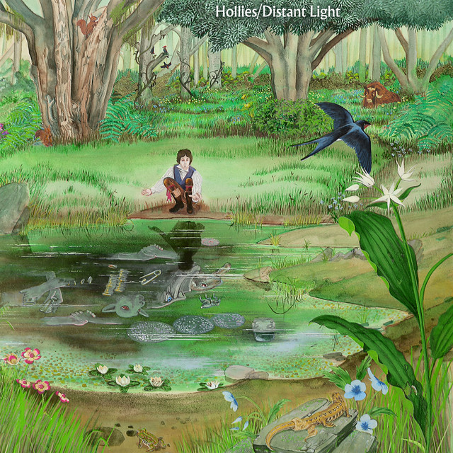

British Rock
1971
Distant Light
4/5
A luminous exploration of atmospheric rock that blends ethereal vocals with intricate guitar work. The album creates expansive soundscapes that evoke both intimacy and cosmic wonder.
Read Review →